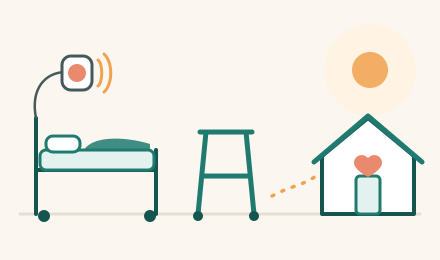

Для кого эта страница
Для пациентов после плановой или срочной ортопедической операции (замена сустава, перелом, операция на позвоночнике) и их близких. Индивидуальные указания хирурга, анестезиолога, физиотерапевта и медсестёр важнее этих общих рекомендаций.

Первые часы после операции
- Медсёстры регулярно проверяют давление, пульс, дыхание, сатурацию, температуру, повязку, чувствительность и движения в ноге или руке.
- Сообщите медсестре, если боль резко усилилась, появилось или нарастает онемение либо слабость в конечности, возникли сильная тошнота, головокружение, затруднение дыхания или кровотечение. Сообщите также, если не получается помочиться.
- Если пациент внезапно стал спутанным, необычно сонливым или перестал узнавать близких, родственникам необходимо сразу сообщить персоналу.
- Пить и есть начинают, когда разрешит медицинская команда.
Боль
- Для уменьшения боли могут сочетать несколько обезболивающих препаратов, например парацетамол и при необходимости опиоиды. Противовоспалительные препараты подходят не всем: их применение зависит от вида операции, риска кровотечения, функции почек и других заболеваний. Цель обезболивания — уменьшить боль настолько, чтобы вы могли безопасно двигаться, отдыхать и выполнять назначенные упражнения (NICE NG180; NICE CG124).
- Не терпите сильную боль — скажите медсестре. Не принимайте собственные обезболивающие без согласования.
- Опиоиды могут вызывать сонливость, тошноту и запор, а иногда — опасное замедление дыхания. Их принимают строго по назначению и только пока они необходимы. Если человека трудно разбудить или его дыхание стало редким и поверхностным, немедленно зовите медицинский персонал (FDA).
Первый подъём и падения
- После операции важно начинать двигаться как можно раньше, когда это разрешит медицинская команда. После плановой замены сустава реабилитацию обычно начинают в день операции или в первые 24 часа (NICE NG157). После операции по поводу перелома бедра — как правило, на следующий день (NICE CG124). После других операций сроки и допустимую нагрузку определяют индивидуально. Первый подъём проводится с помощью персонала.
- В первый раз не вставайте одни: нажмите кнопку вызова (פעמון) и дождитесь персонала. Возможны головокружение и слабость.
- Чтобы не упасть: удобная закрытая нескользящая обувь, очки, ходунки рядом, ночью — свет; держите кнопку вызова и телефон под рукой (NICE NG249).
Профилактика тромбов
- Риск тромбов оценивает команда; могут назначить уколы или таблетки против тромбов, компрессионные чулки или манжеты (NICE NG89).
- Если движения стоп не запрещены, регулярно выполняйте рекомендованные упражнения «на себя — от себя». Они помогают поддерживать кровообращение, но не заменяют назначенные лекарства и другие меры профилактики тромбов.
- При появлении новой боли или отёка икры сразу сообщите персоналу. Внезапная одышка или боль в груди могут указывать на опасное осложнение — немедленно зовите персонал. Если это произошло дома, звоните 101 (Маген Давид Адом).
Дыхание, питьё, питание, кишечник
- Глубоко дышите и откашливайтесь несколько раз в час — это помогает лёгким.
- Если нет ограничений по жидкости, пейте достаточно; ешьте сбалансированно (AAOS).
- После операции, особенно при приёме опиоидных обезболивающих, возможен запор. Сообщите медсестре, если возникли трудности с опорожнением кишечника или стула нет несколько дней. При сильной боли в животе, выраженном вздутии или рвоте сообщите немедленно.
Рана, дренаж, катетер
- Повязку меняет персонал. Не трогайте рану и не снимайте повязку сами.
- Если стоит дренаж или мочевой катетер — не тяните трубки; сообщайте о выпадении, подтекании или болях.
- Сразу сообщите персоналу, если повязка сильно промокла от крови или других выделений, усилились покраснение, отёк или боль вокруг раны. После операции на позвоночнике особенно важно сообщить о прозрачных водянистых выделениях из раны или новой сильной головной боли (NICE NG125).
- После операции на позвоночнике новое онемение в промежности, нарастающая слабость ног или нарушение контроля мочеиспускания и стула требуют немедленной медицинской оценки (NICE NG127).
Перед выпиской убедитесь, что у вас есть письменно
- какие лекарства принимать, сколько и как долго (включая уколы против тромбов) и какие свои лекарства возобновить;
- если назначены уколы против тромбов или другие процедуры дома — кто будет их выполнять и как правильно это делать;
- уход за раной, когда снимать швы или скобы и когда можно мыться;
- какую нагрузку на ногу или руку можно давать, ограничения движений, упражнения, средства опоры;
- какая помощь потребуется дома, безопасно ли вам самостоятельно вставать, ходить и пользоваться туалетом, нужна ли домашняя физиотерапия или дальнейшая реабилитация;
- дата контрольного визита и куда звонить с вопросами;
- тревожные признаки и когда звонить 101 (см. страницу «После операции: тревожные признаки»).
Дома
- Уберите коврики и провода, обеспечьте свет ночью; поручни в душе и у туалета, высокое сиденье на унитаз и устойчивый стул с подлокотниками могут помочь (AAOS).
- Увеличивайте ходьбу постепенно, делайте упражнения, которые дал физиотерапевт.
- Возобновляйте вождение только после согласования с врачом, когда сможете безопасно управлять автомобилем. Не садитесь за руль при сонливости или во время приёма опиоидных обезболивающих, влияющих на внимание и реакцию (AAOS).
Официальные источники
- NICE NG157 — Joint replacement (primary): hip, knee and shoulder, 2020, 1.10.1
- NICE CG124 — Hip fracture: management
- NICE NG180 — Perioperative care in adults
- NICE NG89 — Venous thromboembolism in over 16s
- NICE NG249 — Falls: assessment and prevention in older people and in people 50 and over at higher risk, 2025
- NICE NG125 — Surgical site infections
- NICE NG127 — Suspected neurological conditions
- NICE CG103 — Delirium
- FDA — Opioid medications, safety information
- AAOS OrthoInfo — Total Hip Replacement (recovery)
- Маген Давид Адом — 101
למי מיועד הדף הזה
למטופלים אחרי ניתוח אורתופדי מתוכנן או דחוף (החלפת מפרק, שבר, ניתוח בעמוד השדרה) ולבני משפחותיהם. ההנחיות האישיות של המנתח, הרופא המרדים, הפיזיותרפיסט והאחיות חשובות יותר מההמלצות הכלליות האלה.
השעות הראשונות אחרי הניתוח
- האחיות בודקות באופן קבוע לחץ דם, דופק, נשימה, ריווי חמצן (סטורציה), חום, חבישה, תחושה ותנועה ברגל או בזרוע.
- דווחו לאחות אם הכאב התגבר בפתאומיות, אם הופיעו או מתגברים חוסר תחושה או חולשה בגפה, או אם יש בחילה חזקה, סחרחורת, קושי בנשימה או דימום. דווחו גם אם אינכם מצליחים להטיל שתן.
- אם המטופל נעשה פתאום מבולבל, ישנוני באופן חריג או הפסיק לזהות את קרוביו — על בני המשפחה לדווח מיד לצוות.
- מתחילים לשתות ולאכול כשהצוות הרפואי מאשר זאת.
כאב
- כדי להקל על הכאב אפשר לשלב כמה תרופות לשיכוך כאבים, למשל פרצטמול, ובמידת הצורך אופיואידים. תרופות נוגדות דלקת אינן מתאימות לכולם: השימוש בהן תלוי בסוג הניתוח, בסיכון לדימום, בתפקוד הכליות ובמחלות אחרות. מטרת הטיפול בכאב היא להפחית את הכאב במידה שתאפשר לכם לזוז בבטחה, לנוח ולבצע את התרגילים שנקבעו לכם (NICE NG180; NICE CG124).
- אל תסבלו כאב חזק — אמרו לאחות. אל תיקחו משככי כאבים משלכם בלי תיאום.
- אופיואידים עלולים לגרום לישנוניות, לבחילה ולעצירות, ולעיתים — להאטה מסוכנת של הנשימה. נוטלים אותם בדיוק לפי המרשם ורק כל עוד יש בהם צורך. אם קשה להעיר את האדם או שנשימתו נעשתה איטית ושטחית — קראו מיד לצוות הרפואי (FDA).
הקימה הראשונה ונפילות
- חשוב להתחיל לזוז מוקדם ככל האפשר אחרי הניתוח, כשהצוות הרפואי מאשר זאת. אחרי החלפת מפרק מתוכננת מתחילים את השיקום בדרך כלל ביום הניתוח או ב־24 השעות הראשונות (NICE NG157). אחרי ניתוח בגלל שבר בירך — בדרך כלל למחרת (NICE CG124). אחרי ניתוחים אחרים העיתוי והעומס המותר נקבעים באופן אישי. הקימה הראשונה נעשית בעזרת הצוות.
- בפעם הראשונה אל תקומו לבד: לחצו על לחצן הקריאה (פעמון) וחכו לצוות. ייתכנו סחרחורת וחולשה.
- כדי לא ליפול: נעליים נוחות, סגורות ושאינן מחליקות, משקפיים, הליכון קרוב אליכם, אור בלילה; שמרו את לחצן הקריאה ואת הטלפון בהישג יד (NICE NG249).
מניעת קרישי דם
- הצוות מעריך את הסיכון לקרישי דם; ייתכן שיינתנו לכם זריקות או כדורים נגד קרישים, גרבי לחץ או שרוולי לחץ (NICE NG89).
- אם לא נאסר עליכם להזיז את כפות הרגליים, בצעו באופן קבוע את התרגילים המומלצים «כף הרגל אליכם — מכם». הם עוזרים לשמור על זרימת הדם, אך אינם מחליפים את התרופות שנרשמו ואמצעים אחרים למניעת קרישים.
- אם הופיעו כאב חדש או נפיחות בשוק, דווחו מיד לצוות. קוצר נשימה פתאומי או כאב בחזה עלולים להעיד על סיבוך מסוכן — קראו מיד לצוות. אם זה קורה בבית, התקשרו ל־101 (מגן דוד אדום).
נשימה, שתייה, תזונה ומעיים
- נשמו עמוק והשתעלו כמה פעמים בשעה — זה עוזר לריאות.
- אם אין לכם הגבלה בשתייה, שתו מספיק; הקפידו על תזונה מאוזנת (AAOS).
- אחרי הניתוח, ובמיוחד בזמן נטילת משככי כאבים אופיואידיים, עלולה להופיע עצירות. דווחו לאחות אם יש לכם קושי ביציאות או שלא הייתה לכם יציאה כמה ימים. בכאב בטן חזק, נפיחות בולטת של הבטן או הקאות — דווחו מיד.
הפצע, הנקז והקטטר
- את החבישה מחליף הצוות. אל תגעו בפצע ואל תסירו את החבישה בעצמכם.
- אם יש לכם נקז או צנתר שתן — אל תמשכו את הצינורות; דווחו אם צינור יצא ממקומו, אם יש דליפה או כאבים.
- דווחו מיד לצוות אם החבישה נרטבה מאוד מדם או מהפרשות אחרות, או אם האודם, הנפיחות או הכאב סביב הפצע התגברו. אחרי ניתוח בעמוד השדרה חשוב במיוחד לדווח על הפרשה שקופה ומימית מהפצע או על כאב ראש חזק חדש (NICE NG125).
- אחרי ניתוח בעמוד השדרה, חוסר תחושה חדש באזור החיץ (בין הרגליים), חולשה מתגברת ברגליים או הפרעה בשליטה על השתן והיציאות מחייבים הערכה רפואית מיידית (NICE NG127).
לפני השחרור ודאו שיש בידיכם בכתב
- אילו תרופות ליטול, באיזו כמות ולכמה זמן (כולל זריקות נגד קרישים), ואילו מהתרופות שלכם לחדש;
- אם נקבעו לכם זריקות נגד קרישים או טיפולים אחרים בבית — מי יבצע אותם ואיך עושים זאת נכון;
- טיפול בפצע, מתי מוציאים את התפרים או את הסיכות ומתי מותר להתרחץ;
- כמה מותר להעמיס על הרגל או על הזרוע, הגבלות תנועה, תרגילים ואמצעי עזר;
- איזו עזרה תצטרכו בבית, האם בטוח שתקומו, תלכו ותשתמשו בשירותים בעצמכם, והאם יש צורך בפיזיותרפיה בבית או בהמשך שיקום;
- מועד הביקורת ולאן להתקשר בשאלות;
- סימני אזהרה ומתי להתקשר ל־101 (ראו את הדף «אחרי הניתוח: סימני אזהרה»).
בבית
- הסירו שטיחונים וכבלים, דאגו לאור בלילה; מאחזי יד במקלחת וליד האסלה, מושב מוגבה לאסלה וכיסא יציב עם משענות ידיים יכולים לעזור (AAOS).
- הגבירו את ההליכה בהדרגה, ובצעו את התרגילים שנתן לכם הפיזיותרפיסט.
- חזרו לנהוג רק אחרי תיאום עם הרופא, כשתוכלו לנהוג ברכב בבטחה. אל תנהגו כשאתם ישנוניים או בזמן נטילת משככי כאבים אופיואידיים שמשפיעים על הקשב ועל התגובה (AAOS).
מקורות רשמיים
- NICE NG157 — Joint replacement (primary): hip, knee and shoulder, 2020, 1.10.1
- NICE CG124 — Hip fracture: management
- NICE NG180 — Perioperative care in adults
- NICE NG89 — Venous thromboembolism in over 16s
- NICE NG249 — Falls: assessment and prevention in older people and in people 50 and over at higher risk, 2025
- NICE NG125 — Surgical site infections
- NICE NG127 — Suspected neurological conditions
- NICE CG103 — Delirium
- FDA — Opioid medications, safety information
- AAOS OrthoInfo — Total Hip Replacement (recovery)
- מגן דוד אדום — 101
لمن هذه الصفحة
للمرضى بعد عملية عظام مخطط لها أو عاجلة (استبدال مفصل، كسر، عملية في العمود الفقري) ولذويهم. التعليمات الشخصية من الجرّاح وطبيب التخدير وأخصائي العلاج الطبيعي والممرضات أهم من هذه التوصيات العامة.
الساعات الأولى بعد العملية
- تفحص الممرضات بانتظام ضغط الدم والنبض والتنفس ونسبة تشبّع الأكسجين ودرجة الحرارة والضماد والإحساس والحركة في الساق أو الذراع.
- أبلغوا الممرضة إذا اشتدّ الألم فجأة، أو ظهر أو ازداد خدر أو ضعف في الطرف، أو حدث غثيان شديد أو دوخة أو صعوبة في التنفس أو نزيف. أبلغوها أيضًا إذا لم تتمكنوا من التبوّل.
- إذا أصبح المريض فجأة مشوّشًا، أو نعسانًا على غير العادة، أو توقف عن التعرّف على أقاربه، فيجب على الأقارب إبلاغ الطاقم فورًا.
- يبدأ الشرب والأكل عندما يسمح الطاقم الطبي بذلك.
الألم
- لتخفيف الألم قد يُجمع بين عدة أدوية مسكّنة، مثل الباراسيتامول، وعند الحاجة الأدوية الأفيونية. الأدوية المضادة للالتهاب لا تناسب الجميع: استعمالها يعتمد على نوع العملية وخطر النزيف ووظائف الكلى والأمراض الأخرى. هدف تسكين الألم هو تخفيف الألم بالقدر الذي يتيح لكم الحركة بأمان والراحة وأداء التمارين الموصوفة لكم (NICE NG180; NICE CG124).
- لا تتحمّلوا الألم الشديد — أخبروا الممرضة. لا تتناولوا مسكّنات الألم الخاصة بكم دون تنسيق.
- قد تسبب الأدوية الأفيونية النعاس والغثيان والإمساك، وأحيانًا تباطؤًا خطيرًا في التنفس. تؤخذ بدقة حسب الوصفة وفقط ما دامت ضرورية. إذا صعُب إيقاظ الشخص أو أصبح تنفسه بطيئًا وسطحيًا، فاستدعوا الطاقم الطبي فورًا (FDA).
النهوض الأول والسقوط
- من المهم البدء بالحركة في أقرب وقت ممكن بعد العملية، عندما يسمح الطاقم الطبي بذلك. بعد استبدال المفصل المخطط له تبدأ إعادة التأهيل عادةً في يوم العملية أو خلال أول 24 ساعة (NICE NG157). بعد عملية بسبب كسر الورك — عادةً في اليوم التالي (NICE CG124). بعد العمليات الأخرى يُحدَّد التوقيت والحِمل المسموح به بشكل فردي. يتم النهوض الأول بمساعدة الطاقم.
- في المرة الأولى لا تنهضوا وحدكم: اضغطوا على زر الاستدعاء (פעמון) وانتظروا الطاقم. قد تحدث دوخة وضعف.
- لتجنّب السقوط: حذاء مريح مغلق غير منزلق، النظارات، المشاية قريبة منكم، إضاءة في الليل؛ أبقوا زر الاستدعاء والهاتف في متناول يدكم (NICE NG249).
الوقاية من الجلطات
- يقيّم الطاقم خطر الجلطات؛ وقد توصف لكم حقن أو أقراص ضد الجلطات، أو جوارب ضاغطة أو أكمام ضاغطة (NICE NG89).
- إذا لم تكن حركة القدمين ممنوعة، فقوموا بانتظام بالتمارين الموصى بها «القدم نحوكم — بعيدًا عنكم». تساعد هذه التمارين على الحفاظ على الدورة الدموية، لكنها لا تحل محل الأدوية الموصوفة والإجراءات الأخرى للوقاية من الجلطات.
- عند ظهور ألم جديد أو تورّم في ربلة الساق، أبلغوا الطاقم فورًا. قد يدل ضيق التنفس المفاجئ أو ألم الصدر على مضاعفة خطيرة — استدعوا الطاقم فورًا. إذا حدث ذلك في البيت، اتصلوا بالرقم 101 (نجمة داود الحمراء).
التنفس والشرب والتغذية والأمعاء
- تنفّسوا بعمق واسعلوا عدة مرات في الساعة — هذا يساعد الرئتين.
- إذا لم تكن هناك قيود على السوائل، فاشربوا كمية كافية؛ وتناولوا غذاءً متوازنًا (AAOS).
- بعد العملية، وخاصة عند تناول المسكنات الأفيونية، قد يحدث إمساك. أبلغوا الممرضة إذا واجهتم صعوبة في التبرّز أو لم يكن لديكم براز لعدة أيام. عند ألم شديد في البطن أو انتفاخ واضح أو قيء، أبلغوا فورًا.
الجرح وأنبوب التصريف والقسطرة
- يغيّر الطاقم الضماد. لا تلمسوا الجرح ولا تنزعوا الضماد بأنفسكم.
- إذا كان لديكم أنبوب تصريف أو قسطرة بولية، فلا تشدّوا الأنابيب؛ وأبلغوا إذا خرج أنبوب من مكانه أو حدث تسرّب أو ألم.
- أبلغوا الطاقم فورًا إذا تبلّل الضماد كثيرًا بالدم أو بإفرازات أخرى، أو ازداد الاحمرار أو التورّم أو الألم حول الجرح. بعد عملية في العمود الفقري من المهم بشكل خاص الإبلاغ عن إفرازات شفافة مائية من الجرح أو عن صداع شديد جديد (NICE NG125).
- بعد عملية في العمود الفقري، يتطلب الخدر الجديد في منطقة العجان (بين الساقين)، أو الضعف المتزايد في الساقين، أو اضطراب التحكم في التبول والتبرز تقييمًا طبيًا فوريًا (NICE NG127).
قبل الخروج تأكدوا من أن لديكم كتابيًا
- ما الأدوية التي تتناولونها، وبأي كمية ولأي مدة (بما في ذلك حقن منع الجلطات)، وأيّ أدويتكم الخاصة تستأنفون؛
- إذا وُصفت لكم حقن ضد الجلطات أو إجراءات أخرى في البيت — من سيقوم بها وكيف تُنفَّذ بالشكل الصحيح؛
- العناية بالجرح، ومتى تُزال الغرز أو الدبابيس الجراحية، ومتى يُسمح بالاستحمام؛
- مقدار الحِمل المسموح به على الساق أو الذراع، وقيود الحركة، والتمارين، ووسائل المساعدة على المشي؛
- ما المساعدة التي ستحتاجونها في البيت، وهل من الآمن أن تنهضوا وتمشوا وتستعملوا المرحاض بأنفسكم، وهل تحتاجون إلى علاج طبيعي في البيت أو إلى متابعة إعادة التأهيل؛
- موعد زيارة المتابعة وبمن تتصلون عند وجود أسئلة؛
- علامات الخطر ومتى تتصلون بالرقم 101 (انظروا صفحة «بعد العملية: علامات الخطر»).
في البيت
- أزيلوا السجاجيد الصغيرة والأسلاك، ووفّروا إضاءة في الليل؛ قد تساعد مقابض الإمساك في مكان الاستحمام وبجانب المرحاض، ومقعد مرحاض مرتفع، وكرسي ثابت بمساند للذراعين (AAOS).
- زيدوا المشي تدريجيًا، وقوموا بالتمارين التي أعطاكم إياها أخصائي العلاج الطبيعي.
- لا تعودوا إلى القيادة إلا بعد التنسيق مع الطبيب، وعندما تستطيعون قيادة السيارة بأمان. لا تقودوا عند الشعور بالنعاس أو أثناء تناول المسكنات الأفيونية التي تؤثر على الانتباه وسرعة رد الفعل (AAOS).
مصادر رسمية
- NICE NG157 — Joint replacement (primary): hip, knee and shoulder, 2020, 1.10.1
- NICE CG124 — Hip fracture: management
- NICE NG180 — Perioperative care in adults
- NICE NG89 — Venous thromboembolism in over 16s
- NICE NG249 — Falls: assessment and prevention in older people and in people 50 and over at higher risk, 2025
- NICE NG125 — Surgical site infections
- NICE NG127 — Suspected neurological conditions
- NICE CG103 — Delirium
- FDA — Opioid medications, safety information
- AAOS OrthoInfo — Total Hip Replacement (recovery)
- نجمة داود الحمراء — 101
Who is this page for
For patients after a planned or urgent orthopedic operation (joint replacement, fracture, spine surgery) and their families. Individual instructions from your surgeon, anesthesiologist, physical therapist, and nurses are more important than these general recommendations.
The first hours after surgery
- Nurses regularly check your blood pressure, pulse, breathing, oxygen level (saturation), temperature, dressing, and feeling and movement in your leg or arm.
- Tell the nurse if your pain suddenly gets much worse, if numbness or weakness in your arm or leg appears or gets worse, or if you have severe nausea, dizziness, difficulty breathing, or bleeding. Also tell the nurse if you cannot pass urine.
- If the patient suddenly becomes confused, unusually sleepy, or stops recognizing family members, relatives must tell the staff right away.
- You start drinking and eating when the medical team allows it.
Pain
- To reduce pain, several pain medicines may be combined, for example paracetamol and, if needed, opioids. Anti-inflammatory medicines are not suitable for everyone: whether they are used depends on the type of surgery, the risk of bleeding, kidney function, and other medical conditions. The goal of pain relief is to reduce pain enough for you to move safely, rest, and do your prescribed exercises (NICE NG180; NICE CG124).
- Do not put up with severe pain — tell the nurse. Do not take your own pain medicines unless this has been agreed.
- Opioids can cause sleepiness, nausea, and constipation, and sometimes dangerously slowed breathing. They are taken exactly as prescribed and only for as long as they are needed. If the person is hard to wake up or their breathing has become slow and shallow, call the medical staff immediately (FDA).
Getting up for the first time and falls
- It is important to start moving as early as possible after surgery, when the medical team allows it. After a planned joint replacement, rehabilitation usually starts on the day of surgery or within the first 24 hours (NICE NG157). After surgery for a hip fracture, it usually starts the next day (NICE CG124). After other operations, the timing and how much weight you may put on the limb are decided individually. The first time you get up, staff will help you.
- The first time, do not get up on your own: press the call button (פעמון) and wait for staff. You may feel dizzy and weak.
- To avoid falling: comfortable, closed, non-slip shoes, your glasses, the walker close by, a light at night; keep the call button and your phone within reach (NICE NG249).
Preventing blood clots
- The team assesses your risk of blood clots; you may be given injections or tablets to prevent clots, compression stockings, or compression cuffs (NICE NG89).
- If you are allowed to move your feet, regularly do the recommended ankle exercises (pull your feet up towards you, then point them away). They help keep your blood flowing, but they do not replace prescribed medicines or other measures to prevent blood clots.
- If you get new pain or swelling in your calf, tell the staff right away. Sudden shortness of breath or chest pain may be a sign of a dangerous complication — call the staff immediately. If this happens at home, call 101 (Magen David Adom).
Breathing, drinking, eating, and bowels
- Breathe deeply and cough several times an hour — this helps your lungs.
- If you have no fluid restrictions, drink enough; eat a balanced diet (AAOS).
- After surgery, especially while taking opioid pain medicines, constipation is possible. Tell the nurse if you have trouble opening your bowels or have not had a bowel movement for several days. If you have severe abdominal pain, marked bloating, or vomiting, tell the nurse immediately.
The wound, drain, and catheter
- Staff change the dressing. Do not touch the wound or remove the dressing yourself.
- If you have a drain or a urinary catheter, do not pull on the tubes; tell the staff if a tube comes out, leaks, or causes pain.
- Tell the staff right away if the dressing becomes heavily soaked with blood or other fluid, or if redness, swelling, or pain around the wound gets worse. After spine surgery, it is especially important to report clear, watery fluid from the wound or a new severe headache (NICE NG125).
- After spine surgery, new numbness in the area between your legs (perineum), increasing weakness in your legs, or problems controlling your bladder or bowels need immediate medical assessment (NICE NG127).
Before you go home (discharge), make sure you have in writing
- which medicines to take, how much and for how long (including injections to prevent blood clots), and which of your own medicines to restart;
- if you have been prescribed injections to prevent blood clots or other treatments at home — who will give them and how to do it correctly;
- wound care, when the stitches or staples will be removed, and when you can wash;
- how much weight you may put on your leg or arm, movement restrictions, exercises, and walking aids;
- what help you will need at home, whether it is safe for you to get up, walk, and use the toilet on your own, and whether you need physical therapy at home or further rehabilitation;
- the date of your follow-up visit and whom to call with questions;
- warning signs and when to call 101 (see the page “After surgery: warning signs”).
At home
- Remove rugs and cords, and make sure there is light at night; grab bars in the shower and by the toilet, a raised toilet seat, and a stable chair with armrests can help (AAOS).
- Increase your walking gradually and do the exercises your physical therapist gave you.
- Only start driving again after agreeing it with your doctor, when you can drive safely. Do not drive if you feel sleepy or while taking opioid pain medicines that affect your attention and reactions (AAOS).
Official sources
- NICE NG157 — Joint replacement (primary): hip, knee and shoulder, 2020, 1.10.1
- NICE CG124 — Hip fracture: management
- NICE NG180 — Perioperative care in adults
- NICE NG89 — Venous thromboembolism in over 16s
- NICE NG249 — Falls: assessment and prevention in older people and in people 50 and over at higher risk, 2025
- NICE NG125 — Surgical site infections
- NICE NG127 — Suspected neurological conditions
- NICE CG103 — Delirium
- FDA — Opioid medications, safety information
- AAOS OrthoInfo — Total Hip Replacement (recovery)
- Magen David Adom — 101